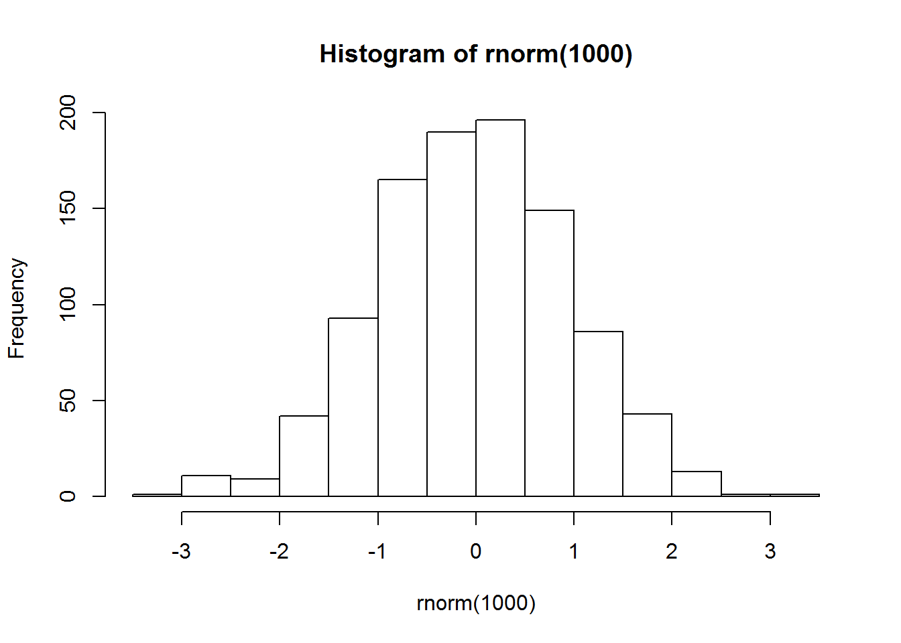
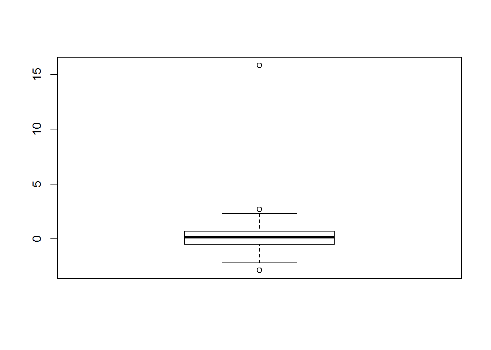

FFFFFFFUUUUUUnctions
What they’re about, how to use them, and how to make your own
At this point, you’re already pretty familiar with the notion of functions in R and ideally you appreciate how convenient they are. However, you might still occasionally get caught off-guard by a function you haven’t encountered before or by an error message produced by a function you have used. In this explainer, we’ll first take a close look at the nature of functions in R and then talk about how to write your own functions.
Recap on functions
In the third USMR lecture, we talked about how mathematical and computer functions are basically the same. They are just some procedures that take an arbitrary number of arguments and return a single output based on the specific value of the provided arguments. Before you object, yes, computer functions can and often do indeed produce structures with many values, however, for a given combination of arguments, they will only produce a single such structure!
To illustrate, let’s look at the most basic functions in R: the assignment operator <- and the concatenate function c().
Yes, <- is a function, even though the way it’s used differs from most other functions. It takes exactly two arguments – a name of an object to the left of it and an object or a value to the right of it. the output of this function is an object with the provided name containing the values assigned:
# arg 1: name function arg 2: value
x <- 3
# print x
x## [1] 3# arg 1: name function arg 2: object + value
y <- x + 7
y## [1] 10The c() function, on the other hand takes an arbitrary number of arguments, including none at all. The arguments can either be single values (numeric, character, logical, NA), or objects. The function then outputs a single vector consisting of all the arguments:
c(1, 5, x, 9, y)## [1] 1 5 3 9 10Using functions
The ()s
As a general rule of thumb, the way to tell R that the thing we are calling is a function is to put brackets – () – after the name, e.g., data.frame(), rnorm(), or factor(). The only exception to this rule are operators – functions that have a convenient infix form – such as the assignment operators (<-, =), mathematical operators (+, ^, %%, …), logical operators (==, >, %in%, …), and a handful of others. Even the subsetting square brackets [] are a function! However, the infix form is just a shorthand and all of these can be used in the standard way functions are used:
2 + 3 # infix form## [1] 5`+`(2, 3) # prefix form, notice the backticks## [1] 5The above is to explain the logic behind a simple principle in R programming: If it is a function (used in its standard prefix form) then it must have ()s. If it is not a function, then it must NOT have them. If you understand this, you will never attempt to run commands like as.factor[x] or my_data(...)!
Specifying arguments
The vast majority of functions require you to give it at least one argument. Arguments of a function are often named. From the point of view of a user of a function, these names are only placeholders for some values we want to pass to the function. In RStudio, you can type the name of a function, open the bracket and then press the Tab key to see a list of arguments the function takes. You can try it now, type, for instance, sd( and press the Tab key. You should see a pop-up list of two arguments – x = and na.rm = – appear.
This means, that to use the sd() function explicitly, we much give it two arguments: a numeric vector and a single logical value (technically, a logical vector of length 1):
sd(x = c(-4, 1, 100, 52, -32, 0.5433, NA), na.rm = FALSE)## [1] NAThe output of the function is NA because our vector contained an NA value and the na.rm = argument that removes the NAs was set to FALSE. Try setting it to TRUE (or T if you’re a lazy typist) and see what R gives you.
Look what happens when we run the following command:
sd(x = c(-4, 1, 100, 52, -32, 0.5433)) # no NAs this time## [1] 47.83839We didn’t specify the value of the na.rm = argument but the code worked anyway. Why might that be…?
Default values of arguments
The reason for this behaviour is that functions can have arguments set to some value by default to facilitate the use of the functions in the most common situations by reducing the amount of typing. Look at the documentation for the sd() function (by running ?sd in the console).
You should see that under “Usage” it reads sd(x, na.rm = FALSE). This means that, by default, the na.rm = argument is set to FALSE and if you don’t specify its value manually, the function will run with this setting. Re-visiting our example with the NA value, you can see that the output is as it was before:
sd(c(-4, 1, 100, 52, -32, 0.5433, NA))## [1] NAArgument matching
I hope you noticed a tiny change in the way the first argument was specified in the line above (coding is a lot about attention to detail!) – there is no x = in the code.
The reason why R is still able to understand what we meant is argument matching. If no names are given to the arguments, R assumes they are entered in the order in which they were specified when the function was created. This is the same order you can look up in the “Usage” section of the function documentation (using ?)
To give you another example, take rnorm() for instance. If you pull up the documentation (AKA help) of the file with ?rnorm, you’ll see that it takes 3 arguments: n =, mean =, and sd =. The latter two have default values but n = doesn’t so we must provide its value.
Setting the first argument to 10 and omitting the other 2 will generate a vector of 10 numbers drawn from a normal distribution with \(\mu = 0\) and \(\sigma=1\):
rnorm(10)## [1] -1.2070657 0.2774292 1.0844412 -2.3456977 0.4291247 0.5060559
## [7] -0.5747400 -0.5466319 -0.5644520 -0.8900378Lets say we want to change the mean to -5 but keep standard deviation the same. Relying on argument matching, we can do:
rnorm(10, -5)## [1] -5.477193 -5.998386 -5.776254 -4.935541 -4.040506 -5.110285 -5.511010
## [8] -5.911195 -5.837172 -2.584165However, if we want to change the sd = argument to 3 but leave mean = set to 0, we need to let R know this more explicitly. There are several ways to do the same thing but they all rely on the principle that unnamed values will be interpreted in order of arguments:
rnorm(10, 0, 3) # keep mean = 0## [1] 0.4022647 -1.4720577 -1.3216436 1.3787683 -2.0811607 -4.3446147
## [7] 1.7242672 -3.0709672 -0.0454149 -2.8078458rnorm(10, , 3) # skip mean = (DON'T DO THIS! it's illegible)## [1] 3.3068926 -1.4267792 -2.1283201 -1.5037742 -4.8872804 -3.5028578
## [7] -6.5401189 -4.0229796 -0.8828816 -1.3976926If the arguments are named, they can be entered in any order:
rnorm(sd = 2, n = 10, mean = -100)## [1] -97.10101 -102.13729 -101.71073 -100.56125 -101.98868 -101.93703
## [7] -102.21464 -102.50397 -101.04766 -100.99370The important point here is that if you give a function 4 (for example) unnamed values separated with commas, R will try to match them to the first 4 arguments of the function. If the function takes fewer than arguments or if the values are not valid for the respective arguments, R will throw an error:
rnorm(100, 5, -3, 8) # more values than arguments## Error in rnorm(100, 5, -3, 8): unused argument (8)That is, it will throw an error if you’re lucky. If you’re not, you might get all sorts of unexpected behaviours:
rnorm(10, T, -7) # illegal values passed to arguments## Warning in rnorm(10, T, -7): NAs produced## [1] NaN NaN NaN NaN NaN NaN NaN NaN NaN NaNPassing vectors as arguments
The majority of functions – and you’ve already seen quite a few of these – have at least one argument that can take multiple values. The x = (first) argument of sample() or the labels = argument of factor() are examples of these.
Imagine we want to sample 10 draws with replacement from the words “elf”, “orc”, “hobbit”, and “dwarf”. Your intuition might be to write something like sample("elf", "orc", "hobbit", "dwarf", 10). That will however not work:
sample("elf", "orc", "hobbit", "dwarf", 10, replace = T)## Error in sample("elf", "orc", "hobbit", "dwarf", 10, replace = T): unused arguments ("dwarf", 10)
Take a moment to ponder why this produces an error…
Yes, you’re right, it has to do with argument matching! R interprets the above command as you passing five arguments to the sample() function, which only takes three arguments. Moreover, the second argument size = must be a positive number, replace = must be a single logical value, and prob = is a vector of numbers between 0 and 1 that must add up to 1 and the vector must be of the same length as the vector passed to the first x = argument. As you can see, our command fails on most of these criteria.
So, how do we tell R that we want to pass the four races of Middle-earth to the first argument of sample()? Well, we need to bind them into a single vector using the c() function:
sample(c("elf", "orc", "hobbit", "dwarf"), 10, T)## [1] "elf" "hobbit" "orc" "elf" "elf" "orc" "elf"
## [8] "elf" "orc" "elf"Remember: If you want to pass a vector of values into a single argument of a function, you need to use an object in your environment containing the vector or a function that outputs a vector. The basic one is c() but others work too, e.g., sample(5:50, 10) (the : operator returns a vector containing a complete sequence of integers between the specified values).
Passing objects as arguments
Everything in R is an object and thus the values passed as arguments to functions are also objects. It is completely up to you whether you want to create the object ad hoc for the purpose of only passing it to a function or whether you want to pass to a function an object you already have in your environment. For example, if our four races are of particular interest to us and we want to keep them for future use, we can assign them to the environment under some name:
ME_races <- c("elf", "orc", "hobbit", "dwarf")
ME_races # here they are## [1] "elf" "orc" "hobbit" "dwarf"Then, we can just use them as arguments to functions:
factor(sample(1:4, 20, T), labels = ME_races)## [1] hobbit elf dwarf elf elf dwarf dwarf orc elf dwarf
## [11] hobbit dwarf dwarf dwarf orc orc orc hobbit orc orc
## Levels: elf orc hobbit dwarfFunction output
Command is a representation of its output
Any complete command in R, such as the one above is merely a symbolic representation of the output it returns. Understanding this is crucial! Just like in a natural language, there are many ways to say the same thing, there are multiple ways of producing the same output in R. It’s not called a programming language for nothing!
One-way street
Another important thing to realise is that, given that there are many ways to do the same thing in R, there is a sort of directionality to the relationship between a command and its output. If you know what a function does, you can unambiguously tell what the output will be given specified arguments. However, once the output is produced, there is no way R can tell what command was used.
Imagine you have three bakers making the same kind of bread: one uses the traditional kneading method, one uses the slap-and-fold technique, and one uses a mixer. If you know the recipe and the procedure they are using, you will be able to tell what they’re making. However, once you have your three loaves in front of you, you won’t be able to say which came from which baker. It’s the same thing with commands in R!
This is the reason why some commands look like they’re repeating things beyond necessity. Take, for instance, this line:
mat[lower.tri(mat)] <- "L"The lower.tri() function takes a matrix as its first argument and returns a matrix of logicals with the same dimensions as the matrix provided. Once it returns its output, R has no way of knowing what matrix was used to produce it and so it has no clue that it has anything to do with our matrix mat. That’s why, if we want to modify the lower triangle of mat, we do it this way.
Obviously, nothing is stopping you from creating the logical matrix by means of some other approach and then use it to subset mat but the above solution is both more elegant and more intelligible.
Knowe thine output as thou knowest thyself
Because more often than not you will be using function to create some object only so that you can feed it into another function, it is essential that you understand what you are asking R to do and know what result you are expecting. There should be no surprises! Read more about this topic in this explainer
A good way to practice is to say to yourself what the output of a command will be before you run it. For instance, the command factor(sample(1:4, 20, T), labels = ME_races) returns a vector of class factor and length 20 containing randomly sampled values labelled according to the four races of Middle-earth we worked with.
Output is an object
Notice that in the code above we passed the sample(1:4, 20, T) command as the first argument of factor(). This works because – as we mentioned earlier – a command is merely a symbolic representation of its output and because everything in R is an object. This means that function output is also an object. Depending on the particular function, the output can be anything from, e.g., a logical vector of length 1 through long vectors and matrices to huge data frames and complex lists of lists of lists…
For instance, the t.test() function returns a list that contains all the information about the test you might ever need:
t_output <- t.test(rnorm(100, 5, 2), mu = 0)
str(t_output) # see the structure of the object## List of 9
## $ statistic : Named num 29
## ..- attr(*, "names")= chr "t"
## $ parameter : Named num 99
## ..- attr(*, "names")= chr "df"
## $ p.value : num 3.86e-50
## $ conf.int : atomic [1:2] 4.78 5.48
## ..- attr(*, "conf.level")= num 0.95
## $ estimate : Named num 5.13
## ..- attr(*, "names")= chr "mean of x"
## $ null.value : Named num 0
## ..- attr(*, "names")= chr "mean"
## $ alternative: chr "two.sided"
## $ method : chr "One Sample t-test"
## $ data.name : chr "rnorm(100, 5, 2)"
## - attr(*, "class")= chr "htest"If we want to know the p-value of the above test, we can simply query the list accordingly:
t_output$p.value## [1] 3.863044e-50Because the command only represents the output object, it can be accessed in the same way. Say you are running some kind of simulation study and are only interested in the t-statistic of the test. Instead of saving the entire output into some kind of named object in the environment, you can simply save the t:
t_stat <- t.test(rnorm(100, 5, 2), mu = 0)$statistic
t_stat## t
## 24.33835Where does the output go?
Let’s go back to discussing factor(). There’s another important issue that sometime causes a level of consternation among novice R users. Imagine we have a data set and we want to designate one of its columns as a factor so that R knows that the column contains a categorical variable.
df <- data.frame(id = 1:10, x <- rnorm(10))
df## id x....rnorm.10.
## 1 1 -0.6665650
## 2 2 -0.2386466
## 3 3 -1.1877653
## 4 4 0.3849353
## 5 5 0.6665795
## 6 6 -0.3046139
## 7 7 1.8250111
## 8 8 0.6705594
## 9 9 0.9486326
## 10 10 2.0494030An intuitive way of turning id into a factor might be:
factor(df$id)## [1] 1 2 3 4 5 6 7 8 9 10
## Levels: 1 2 3 4 5 6 7 8 9 10This, however, does not work:
class(df$id)## [1] "integer"The reason for this has to do with the fact that the argument-output relationship is directional. Once the object inside df$id is passed to factor(), R forgets about the fact that it had anything to do with df or one of its columns. It has therefore no way of knowing that you want to be modifying a column of a data frame. Because of that, the only place factor() can return the output to is the one it uses by default.
Console
The vast majority of functions return their output into the console. factor() is one of these functions. That’s why when you type in the command above, you will see the printout of the output in the console. Once it’s been returned, the output is forgotten about – R can’t see the console or read from it!
This is why factor(df$id) does not turn the id column of id into a factor.
Environment
A small number of functions return a named object to the global R environment, where you can see, access, and work with it. The only one you will need to use for a long time to come (possibly ever) is the already familiar assignment operator <-.
You can use <- to create new objects in the environment or re-assign values to already existing names. So, if you want to turn the id column of df into a factor you need to reassign some new object to df$id. What object? Well, the one returned by the factor(...) command above:
df$id <- factor(df$id)As you can see, there is no printout now because the output of factor() has been passed into the assignment function which directed it into the df$id object. Let’s make sure it really worked:
class(df$id)## [1] "factor"Graphical device
Functions that create graphics return their output into something called the graphical device. It is basically the thing responsible for drawing stuff on the screen of your computer. You’ve already encountered some of these functions – plot(), par(), lines(), abline().
Files
Finally, there are functions that can write output into all sorts of files. For instance, if you want to save a data frame into a .csv file, you can use the read.csv() function.
Of course, you can redirect where particular output gets sent, just like we did with df$id <- factor(...). For instance, you can save a plot into the global environment using assignment:
my_plot <- hist(rnorm(1000))
my_plot## $breaks
## [1] -3.5 -3.0 -2.5 -2.0 -1.5 -1.0 -0.5 0.0 0.5 1.0 1.5 2.0 2.5 3.0
## [15] 3.5
##
## $counts
## [1] 1 11 9 42 93 165 190 196 149 86 43 13 1 1
##
## $density
## [1] 0.002 0.022 0.018 0.084 0.186 0.330 0.380 0.392 0.298 0.172 0.086
## [12] 0.026 0.002 0.002
##
## $mids
## [1] -3.25 -2.75 -2.25 -1.75 -1.25 -0.75 -0.25 0.25 0.75 1.25 1.75
## [12] 2.25 2.75 3.25
##
## $xname
## [1] "rnorm(1000)"
##
## $equidist
## [1] TRUE
##
## attr(,"class")
## [1] "histogram"Alternatively, you can export it by creating a new graphical device inside of a file:
# create a graphical device in a new my_plot.png
# file in the working directory
png("my_plot.png")
hist(rnorm(100)) # create plot
# close the graphical device
dev.off()Writing functions
While the text above contains information that is absolutely crucial for working with R, this section about user-defined functions is a little bit advanced. However, the ability to write your own functions is an immensely powerful tool for data processing and analysis so you are encouraged to put some effort into understanding how functions work and how you can write your own. It’s really not difficult!
Functions are objects too!
It’s probably getting a bit old at this stage but everything in R is an object. And since functions are a subset of everything, they also are objects. They are essentially chunks of code stored into a named object that sits in some environment. User-defined functions will be located in the global environment, while functions from packages (either pre-loaded ones or those you load using library()) sit in the environments of their respective packages.
If you want to see the code inside a function, just type it into the console without the brackets and press Enter. You might remember this chap:
lower.tri## function (x, diag = FALSE)
## {
## x <- as.matrix(x)
## if (diag)
## row(x) >= col(x)
## else row(x) > col(x)
## }
## <bytecode: 0x000000000ba20fd0>
## <environment: namespace:base>Anatomy of a function
Looking at the code above you can see the basic structure of a function:
- First, it’s specified that this object is a
function - Second, in the
()s, there’s the specifications of the argument the function takes including any default values- As you can see
lower.tri()takes two arguments,xanddiag, the latter of which is set by default toFALSE
- As you can see
- Third, there is the body of the function enveloped in a set of curly braces
{}which includes the actual code that does the function’s magic - Finally, there is some meta-information including the environment in which the function lives (in this case, it’s the
"base"package)
Notice that the function code only works using the x and diag objects. No matter what you pass to the function’s x argument will – as far as the function is concerned – be called x. That is why R doesn’t know where the value passed to the arguments of functions come from!
DIY
To make your own function, all you need to do is follow the syntax above, come up with your own code, and assign the function object to a name in your global R environment:
my_fun <- function(arg1, arg2, arg3, ...) {
some code using args
return(object to return)
}The return() function is not strictly speaking necessary but it’s good practice to be explicit about this of the many potential objects inside of the function’s environment you want to return to the global environment.
Let’s start with something simple. Let’s write a function that takes as its only argument a person’s name and returns a greeting:
hello <- function(name) {
out <- paste0("Hello ", name, "!")
return(out)
}So, we created a named object hello and assigned it a function of one argument name =. Inside the {}s, there is code that creates and object out with a character string created from pasting together "Hello ", whatever gets passed to the name = argument, and an exclamation point. Finally, this out gets returned into the global environment.
Let’s see if it works:
hello("Tim")## [1] "Hello Tim!"Nice! Not extremely useful but nice…
Let’s create a handier function. One thing that is sometimes done when cleaning data is removing outlying values. Wouldn’t it be useful to have a function that does it for us? (Aye, it would!)
In lecture 3, we talked about how box plots can be used to identify outliers. Let’s demonstrate this:
x <- rnorm(100)
x[82] <- 15.82 # add a large number
boxplot(x)
OK, as the boxplot clearly shows, there’s a few outlying values in the x variable. As you now surely know, everything in R is an object and so we can look at the object returned by boxplot() to see if we can use it to identify which element in x is the culprits:
bxplt <- boxplot(x)
str(bxplt)## List of 6
## $ stats: num [1:5, 1] -2.191 -0.486 0.127 0.712 2.309
## $ n : num 100
## $ conf : num [1:2, 1] -0.0626 0.3158
## $ out : num [1:3] -2.86 15.82 2.69
## $ group: num [1:3] 1 1 1
## $ names: chr "1"The str() function shows us the structure of the boxplot() output object. On inspection, you can see that the $out element of the list returned by the function includes the outlying values. The one we imputed manually (15.82) is there, which is a good sanity check. Let’s extract only these values:
outl <- boxplot(x, plot = F)$out # don't show plot
outl## [1] -2.864419 15.820000 2.690907Cool, all we need to do now is replace the values of x that are equal to these values with NAs:
x %in% outl## [1] FALSE FALSE FALSE FALSE FALSE FALSE FALSE FALSE FALSE FALSE FALSE
## [12] FALSE FALSE FALSE FALSE FALSE FALSE FALSE FALSE FALSE FALSE FALSE
## [23] FALSE FALSE FALSE FALSE FALSE FALSE FALSE FALSE FALSE FALSE FALSE
## [34] FALSE FALSE FALSE FALSE FALSE FALSE FALSE FALSE TRUE FALSE FALSE
## [45] FALSE FALSE FALSE FALSE FALSE FALSE FALSE FALSE FALSE FALSE FALSE
## [56] FALSE FALSE FALSE FALSE FALSE FALSE FALSE FALSE FALSE FALSE FALSE
## [67] FALSE FALSE FALSE FALSE FALSE FALSE FALSE FALSE FALSE FALSE FALSE
## [78] FALSE FALSE FALSE FALSE TRUE FALSE TRUE FALSE FALSE FALSE FALSE
## [89] FALSE FALSE FALSE FALSE FALSE FALSE FALSE FALSE FALSE FALSE FALSE
## [100] FALSEx[x %in% outl] <- NAWe can now look at x to see that the outlying values have been replaced with NAs:
x## [1] 0.050548105 2.308944104 -0.859463175 1.539116169 -1.614466177
## [6] -1.077316458 -0.901360547 -1.521112361 1.484693845 1.033703320
## [11] 1.371266498 -0.608921441 0.085597093 1.118507491 1.060529788
## [16] 0.560136774 0.158147541 -1.164173222 0.309686196 -0.178493815
## [21] -0.654524572 1.576157264 -0.701403737 0.242876389 0.516035756
## [26] 1.051154762 0.367304396 1.973215315 0.445136748 -0.488480168
## [31] 0.102511536 0.669129246 -2.190508808 -0.095564051 0.041525709
## [36] -0.238600874 0.051368536 -1.991806360 0.346236285 0.003029343
## [41] -0.492428501 NA -0.411212737 0.118208538 -0.071160768
## [46] -0.608697429 0.321645288 -0.910489532 0.699281047 0.825732375
## [51] 0.957543412 0.798846270 -0.352127210 -0.024946828 1.245073372
## [56] 0.610941959 0.346883033 1.279179711 -0.626845842 0.025263272
## [61] 1.301509003 -0.249789695 0.134998345 -0.146673231 1.233930594
## [66] 0.135425982 0.067240292 -0.681222109 -0.418462940 -1.569214209
## [71] 0.409586541 0.847803193 -1.337384310 0.401354729 0.328935897
## [76] 0.195321000 0.071462610 1.634933261 0.333007078 1.401812623
## [81] 0.451017021 NA -0.539737455 NA -0.059816076
## [86] -0.497475868 0.382417150 0.409180178 0.723745923 -0.914924574
## [91] -0.137185092 1.574293278 -0.482917703 -0.356190513 0.610222274
## [96] -0.606035147 1.134512003 0.422468289 0.089549711 -1.591713994Great! Now that we know our algorithm for removing outliers, we can write our function:
out.liar <- function(variable) { # arguments can be called whatever
remove <- boxplot(variable, plot = F)$out
variable[variable %in% remove] <- NA
return(variable)
}Let’s try it out!
x <- rnorm(20, 9, 2)
x[2] <- 1520
x## [1] 8.305666 1520.000000 8.428190 10.308758 7.150505
## [6] 5.818594 10.418797 11.898654 5.911239 10.692138
## [11] 9.661865 8.267625 12.498570 6.989710 8.765121
## [16] 10.337011 6.835052 11.211936 8.771693 11.458297x <- out.liar(x)
x## [1] 8.305666 NA 8.428190 10.308758 7.150505 5.818594 10.418797
## [8] 11.898654 5.911239 10.692138 9.661865 8.267625 12.498570 6.989710
## [15] 8.765121 10.337011 6.835052 11.211936 8.771693 11.458297Pretty neat, huh?
The code inside of the function definition can be as simple or as complicated as you want it to be. However, it must run without errors and you need to think about various edge cases that might break the code or lead to unexpected behaviour. For instance, if we give out out.liar() function a character vector, it will throw an error because boxplot() can only cope with numeric vectors:
out.liar(letters)## Error in x[floor(d)] + x[ceiling(d)]: non-numeric argument to binary operatorThis error message is a little obscure but what happened is that out.liar() passed the vector of letters to boxplot() which, in turn, passed it to the + function. Since you cannot add letters, the function threw an error, thus breaking boxplot() and out.liar().
You might also wish to make the function able to identify outliers in a data frame. To do that you would have to make the function recognise which columns of the data frame provided are numeric and then run the code on each one of these columns. Finally the function should return the entire data frame with the non-numeric columns untouched and the numeric ones modified:
out.liar <- function(variable) { # arguments can be called whatever
if (class(variable) == "data.frame") {
# identify numeric variables by applying the is.numeric
# function to each column of the data frame
num_vars <- unlist(lapply(variable, is.numeric))
# run the out.liar function on each numeric column
# this kind of recurrence where you run a function inside of itself
# is allowed and often used!
variable[num_vars] <- lapply(variable[num_vars], out.liar)
} else {
remove <- boxplot(variable, plot = F)$out
variable[variable %in% remove] <- NA
}
return(variable)
}Let’s see if it works. First, create some data frame with a couple of outlying values:
df <- data.frame(id = factor(1:10), var1 = c(100, rnorm(9)), var2 = c(rchisq(9, 4), 100), var3 = LETTERS[1:10])
df## id var1 var2 var3
## 1 1 100.00000000 7.247045 A
## 2 2 -0.02329682 8.398776 B
## 3 3 -0.73510547 3.299815 C
## 4 4 -1.34051483 3.008875 D
## 5 5 -1.37306589 3.500481 E
## 6 6 -0.14905709 4.896038 F
## 7 7 -2.00627596 5.283248 G
## 8 8 -1.55956854 6.808597 H
## 9 9 1.96270157 1.557017 I
## 10 10 -0.17831822 100.000000 JNext, feed df to out.liar():
out.liar(df)## id var1 var2 var3
## 1 1 NA 7.247045 A
## 2 2 -0.02329682 8.398776 B
## 3 3 -0.73510547 3.299815 C
## 4 4 -1.34051483 3.008875 D
## 5 5 -1.37306589 3.500481 E
## 6 6 -0.14905709 4.896038 F
## 7 7 -2.00627596 5.283248 G
## 8 8 -1.55956854 6.808597 H
## 9 9 1.96270157 1.557017 I
## 10 10 -0.17831822 NA JFinally, check if the function still works on single columns even after our modification:
x <- rnorm(20, 9, 2)
x[2] <- 1520
out.liar(x)## [1] 10.784808 NA 12.074365 9.905239 5.808611 8.625669 10.135269
## [8] 9.325358 6.256034 5.232095 8.863906 10.374614 7.583999 9.755355
## [15] 10.161515 10.949252 10.174905 9.490558 5.867993 7.983744Everything looking good!
So this is how you write functions. The principle is simple but actually creating good and safe functions requires a lot of thinking and attention to detail.
Hacking
Finally, if you’re really into the nitty-gritty of R, a great way of learning how to write functions is to look at ones you use and try to pick them apart, break them, fix them, and put them back together.
Since – sing along – everything in R is an object, you can assign the code inside of an already existing function to some other object. For instance, the boxplot() function calls a different “method” based on what input you give it (this is rather advanced programming so don’t worry too much about it!). The one we used is called botplot.default() and it hides deep inside package "graphics". To get it out, we need to tell R to get it from there using the package:::function syntax:
box2 <- graphics:::boxplot.default
box2## function (x, ..., range = 1.5, width = NULL, varwidth = FALSE,
## notch = FALSE, outline = TRUE, names, plot = TRUE, border = par("fg"),
## col = NULL, log = "", pars = list(boxwex = 0.8, staplewex = 0.5,
## outwex = 0.5), horizontal = FALSE, add = FALSE, at = NULL)
## {
## args <- list(x, ...)
## namedargs <- if (!is.null(attributes(args)$names))
## attributes(args)$names != ""
## else rep_len(FALSE, length(args))
## groups <- if (is.list(x))
## x
## else args[!namedargs]
## if (0L == (n <- length(groups)))
## stop("invalid first argument")
## if (length(class(groups)))
## groups <- unclass(groups)
## if (!missing(names))
## attr(groups, "names") <- names
## else {
## if (is.null(attr(groups, "names")))
## attr(groups, "names") <- 1L:n
## names <- attr(groups, "names")
## }
## cls <- sapply(groups, function(x) class(x)[1L])
## cl <- if (all(cls == cls[1L]))
## cls[1L]
## else NULL
## for (i in 1L:n) groups[i] <- list(boxplot.stats(unclass(groups[[i]]),
## range))
## stats <- matrix(0, nrow = 5L, ncol = n)
## conf <- matrix(0, nrow = 2L, ncol = n)
## ng <- out <- group <- numeric(0L)
## ct <- 1
## for (i in groups) {
## stats[, ct] <- i$stats
## conf[, ct] <- i$conf
## ng <- c(ng, i$n)
## if ((lo <- length(i$out))) {
## out <- c(out, i$out)
## group <- c(group, rep.int(ct, lo))
## }
## ct <- ct + 1
## }
## if (length(cl) && cl != "numeric")
## oldClass(stats) <- cl
## z <- list(stats = stats, n = ng, conf = conf, out = out,
## group = group, names = names)
## if (plot) {
## if (is.null(pars$boxfill) && is.null(args$boxfill))
## pars$boxfill <- col
## do.call("bxp", c(list(z, notch = notch, width = width,
## varwidth = varwidth, log = log, border = border,
## pars = pars, outline = outline, horizontal = horizontal,
## add = add, at = at), args[namedargs]))
## invisible(z)
## }
## else z
## }
## <bytecode: 0x00000000095baa90>
## <environment: namespace:graphics>This is the code that creates the boxplot and, if you wish, you can try to look into it and find how the function identifies outliers. You can even change the function by typing edit(box2).
Being able to peer under the hood of readymade functions opens up an infinite playground for you so enjoy yourself!
To conclude, in case there’s still any lingering doubt, everything in R is an object!